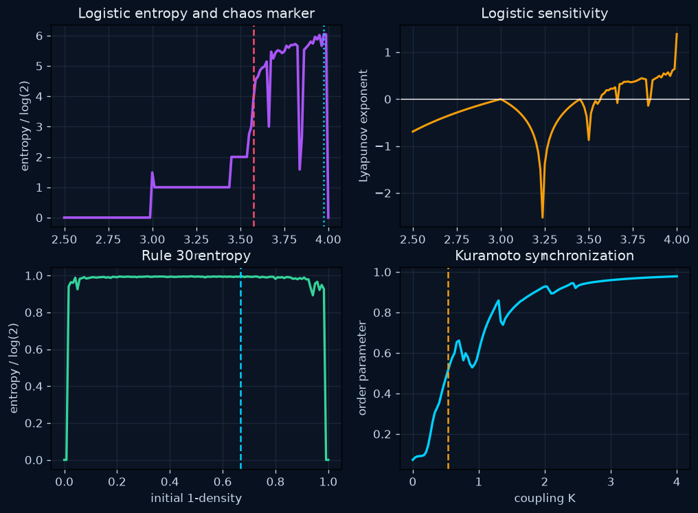
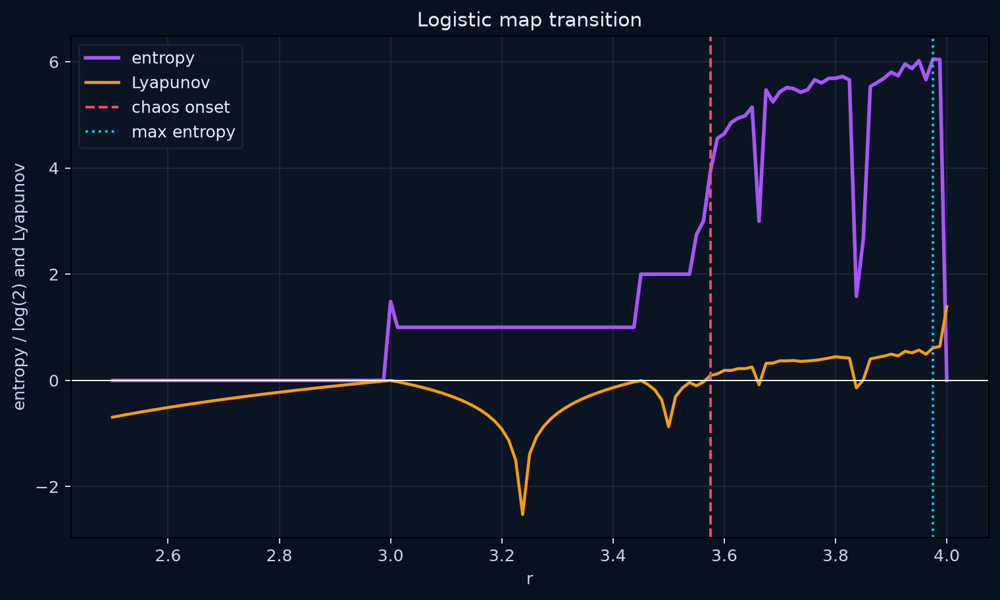
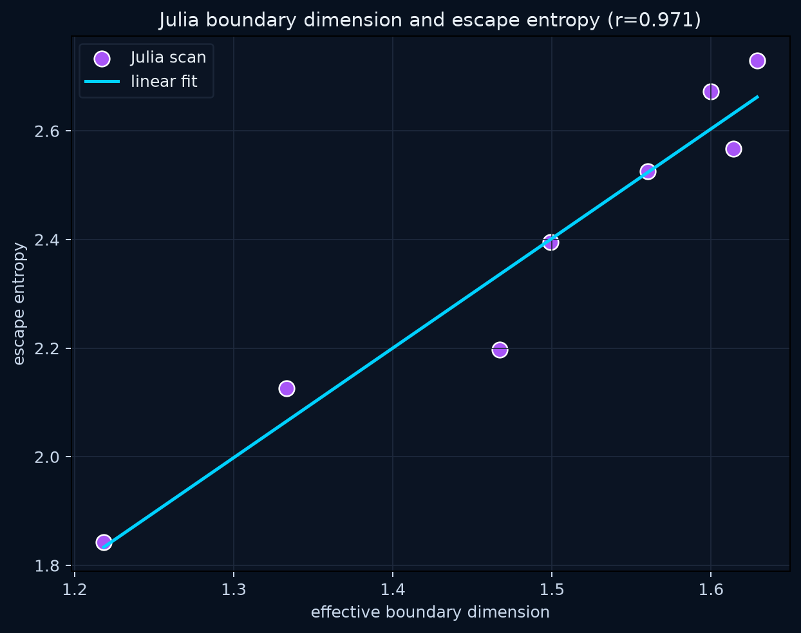
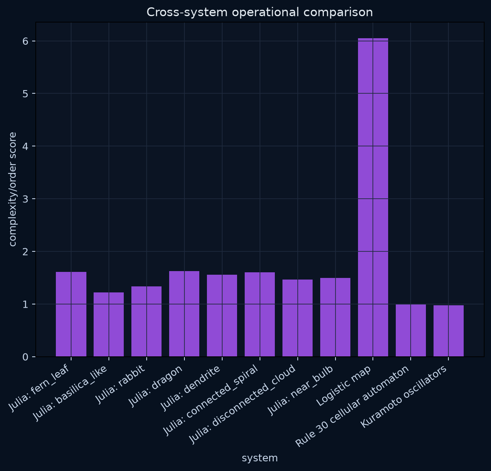

A cross-system map of transition, entropy, boundary complexity, and coherence.




| System | Complexity/order | Entropy-like | Coherence/order | Transition marker | Raw source |
|---|---|---|---|---|---|
| Julia: fern_leaf | 1.6142 | 2.5665 | c=-0.727+0.189i | boundary dimension, edge density, escape entropy | |
| Julia: basilica_like | 1.2183 | 1.8429 | c=-0.750+0.000i | boundary dimension, edge density, escape entropy | |
| Julia: rabbit | 1.3332 | 2.1261 | c=-0.123+0.745i | boundary dimension, edge density, escape entropy | |
| Julia: dragon | 1.6289 | 2.7298 | c=-0.400+0.600i | boundary dimension, edge density, escape entropy | |
| Julia: dendrite | 1.5602 | 2.5255 | c=+0.000+0.750i | boundary dimension, edge density, escape entropy | |
| Julia: connected_spiral | 1.5997 | 2.6722 | c=-0.800+0.156i | boundary dimension, edge density, escape entropy | |
| Julia: disconnected_cloud | 1.4672 | 2.1969 | c=+0.350+0.350i | boundary dimension, edge density, escape entropy | |
| Julia: near_bulb | 1.4990 | 2.3957 | c=-0.100+0.650i | boundary dimension, edge density, escape entropy | |
| Logistic map | 6.0523 | 6.0523 | r=3.575 chaos onset; r=3.975 max entropy | entropy and Lyapunov exponent | |
| Rule 30 cellular automaton | 0.9955 | 0.9955 | density=0.667 max entropy | entropy over initial density | |
| Kuramoto oscillators | 0.9783 | 0.0217 | 0.9783 | K=0.533 half-max order; K=4.000 max sampled order | synchronization order |
| Name | c | Boundary dimension | Edge density | Escape entropy | Fit R² |
|---|---|---|---|---|---|
| fern_leaf | -0.7269 +0.1889i | 1.6142 | 0.1500 | 2.5665 | 0.9997 |
| basilica_like | -0.7500 +0.0000i | 1.2183 | 0.0291 | 1.8429 | 0.9960 |
| rabbit | -0.1230 +0.7450i | 1.3332 | 0.0476 | 2.1261 | 0.9956 |
| dragon | -0.4000 +0.6000i | 1.6289 | 0.1610 | 2.7298 | 0.9991 |
| dendrite | 0.0000 +0.7500i | 1.5602 | 0.1236 | 2.5255 | 0.9979 |
| connected_spiral | -0.8000 +0.1560i | 1.5997 | 0.1501 | 2.6722 | 0.9996 |
| disconnected_cloud | 0.3500 +0.3500i | 1.4672 | 0.0775 | 2.1969 | 0.9987 |
| near_bulb | -0.1000 +0.6500i | 1.4990 | 0.0906 | 2.3957 | 0.9983 |